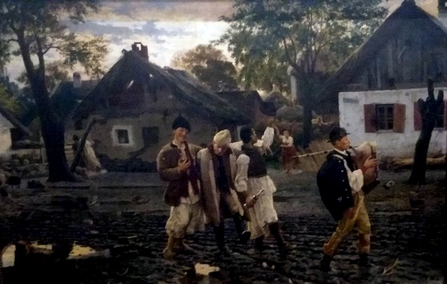

9. Ovako se kuÄa teÄe - Ova naÅ¡a livada
C'est ainsi chaque soir - Il est à nous ce pré-lÃ
(TreÄa Rukovet - 3ème guirlande : (07;18 - 07:25)

Les bambocheurs (Vesela braÄa), 1887
UroÅ¡ PrediÄ (1857-1953)
|
|

|
JoÅ¡ jedna pesma koja oživljava bivÅ¡u Jugoslaviju: peva se i u Hrvatskoj i u Srbiji. Hrvatski glumac Fabijan Å ovagovicÌ (1932-2001) i 6 srpskih operskih prebega koji su 1999. godine formirali Sekstet Skadarlija (tako se zove Beogradski Monmartr) stavili su tu pesmu na svoj repertoar sa sitnim razlikama. Mokranjac samo pominje nju u svojoj 3. âRukovetiâ na 8 kratkih sekundi (âOvako se kucÌa teÄe, u mehani svako veÄeâ). Ovde ovaj odlomak je umetnut pre Å ovagovicÌeve verzije. Izraz âI POâ koji se pojavljuje u 3 strofe nije lak da se prevede: âsat i poâ znaÄi âsat i polovina satiâ, ali âÄovek i poâ znaÄi âÄovek od vrednostiâ. Ovde âLanac i poâ mora da se prevede sa âpotpun lanac plesaÄaâ, a âdat cÌe babo joÅ¡ i poâ sa âgazda cÌe puno rakije sipati â, ukoliko pripita pijanica dalje savlada gramatiku! S druge strane, u refrenu, isti niz reÄi âi po livadeâ podstiÄe lanac da ide âÄak i na livadeâ koje ipak ne nude idealnu povrÅ¡inu za plesanje. Å ala o kecelji konobarice Å¡to se pijanac obavezuje da proceni, u jednoj verziji, nestaje u drugoj, možda zato Å¡to je reÄ 'opipo' (za 'opipao') pomeÅ¡ana sa 'opio', kad je pesma putovala. |
Encore un chant qui ressuscite l'ancienne Yougoslavie: il se chante à la fois en Croatie et en Serbie. L'acteur croate Fabijan Å ovagoviÄ (1932-2001) et les 6 transfuges serbes de l'opéra qui constituèrent en 1999 le "sextette" Skadarlija (c'est le nom du Montmartre belgradois) l'ont mis à leur répertoire avec quelques menues différences. Mokranjac ne fait que l'évoquer dans sa 3ème "Rukovet" pendant 7 courtes secondes ("Ovako se kuÄa teÄe, u mehani svako veÄe" - "C'est ainsi que va la vie au cabaret chaque soir"). Ici on a inséré ce passage avant la version Å ovagoviÄ. L'expression "I PO" qui apparaît dans 3 strophes n'est pas simple à traduire: "sat i po" signifie "une heure et demie", mais " Äovek i po" veut dire un "homme de valeur". Ici "Lanac i po" doit se traduire par "une imposante chaîne (de danseurs)" et "dat Äe babo joÅ¡ i po" par "le patron versera en abondance", si tant est que le bambocheur émêché maîtrise encore la grammaire. En revanche dans le refrain, la même suite de mots "i po livade" incite la chaîne à rejoindre "même les prairies" qui n'offrent pourtant pas une surface idéale pour exercer son art. La plaisanterie sur le tablier de la serveuse dont l'ivrogne entreprend de faire l'estimation dans l'une des versions disparaît dans l'autre, peut-être parce que le mot "opipo' pour "opipao" (tâté) a été confondu avec "opio". "Opio sam se" signifie "se saoûler. Notons enfin que "rakija" signifie "eau-de-vie" en général et pas seulement "raki" (alool de riz fermenté) |